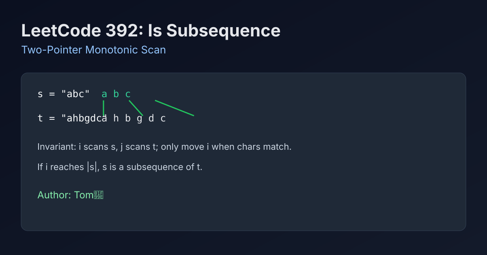

LeetCode 392: Is Subsequence (Two-Pointer Monotonic Scan)
LeetCode 392Two PointersStringToday we solve LeetCode 392 - Is Subsequence.
Source: https://leetcode.com/problems/is-subsequence/

English
Problem Summary
Given strings s and t, determine whether s is a subsequence of t. A subsequence preserves relative order but does not require contiguous characters.
Key Insight
Use two pointers. Pointer i scans s, pointer j scans t. Whenever s[i] == t[j], advance i; always advance j. If i reaches s.length(), all characters in s were matched in order.
Optimal Algorithm Steps
1) Initialize i = 0, j = 0.
2) While i < len(s) and j < len(t), compare s[i] and t[j].
3) If equal, move i forward. Always move j forward.
4) Return i == len(s).
Complexity Analysis
Time: O(|t|) in worst case.
Space: O(1).
Common Pitfalls
- Forgetting empty s should return true.
- Moving both pointers only on match (will get stuck / miss scans).
- Confusing subsequence with substring (substring requires contiguous match).
Reference Implementations (Java / Go / C++ / Python / JavaScript)
class Solution {
public boolean isSubsequence(String s, String t) {
int i = 0, j = 0;
while (i < s.length() && j < t.length()) {
if (s.charAt(i) == t.charAt(j)) {
i++;
}
j++;
}
return i == s.length();
}
}func isSubsequence(s string, t string) bool {
i, j := 0, 0
for i < len(s) && j < len(t) {
if s[i] == t[j] {
i++
}
j++
}
return i == len(s)
}class Solution {
public:
bool isSubsequence(string s, string t) {
int i = 0, j = 0;
while (i < (int)s.size() && j < (int)t.size()) {
if (s[i] == t[j]) {
++i;
}
++j;
}
return i == (int)s.size();
}
};class Solution:
def isSubsequence(self, s: str, t: str) -> bool:
i = j = 0
while i < len(s) and j < len(t):
if s[i] == t[j]:
i += 1
j += 1
return i == len(s)var isSubsequence = function(s, t) {
let i = 0, j = 0;
while (i < s.length && j < t.length) {
if (s[i] === t[j]) i++;
j++;
}
return i === s.length;
};中文
题目概述
给定字符串 s 和 t，判断 s 是否是 t 的子序列。子序列要求相对顺序一致，但不要求连续。
核心思路
双指针顺序扫描：i 指向 s，j 指向 t。当字符相等时推进 i，每轮都推进 j。最终如果 i 走到 s 末尾，说明 s 全部按序匹配成功。
最优算法步骤
1）初始化 i = 0、j = 0。
2）当 i < s.length 且 j < t.length 时循环比较。
3）若 s[i] == t[j]，则 i++；无论是否相等都执行 j++。
4）返回 i == s.length。
复杂度分析
时间复杂度：O(|t|)。
空间复杂度：O(1)。
常见陷阱
- 忽略空串边界：当 s 为空时应返回 true。
- 只在匹配时才移动两个指针，会导致逻辑错误。
- 把子序列误当成子串（子串要求连续）。
多语言参考实现（Java / Go / C++ / Python / JavaScript）
class Solution {
public boolean isSubsequence(String s, String t) {
int i = 0, j = 0;
while (i < s.length() && j < t.length()) {
if (s.charAt(i) == t.charAt(j)) {
i++;
}
j++;
}
return i == s.length();
}
}func isSubsequence(s string, t string) bool {
i, j := 0, 0
for i < len(s) && j < len(t) {
if s[i] == t[j] {
i++
}
j++
}
return i == len(s)
}class Solution {
public:
bool isSubsequence(string s, string t) {
int i = 0, j = 0;
while (i < (int)s.size() && j < (int)t.size()) {
if (s[i] == t[j]) {
++i;
}
++j;
}
return i == (int)s.size();
}
};class Solution:
def isSubsequence(self, s: str, t: str) -> bool:
i = j = 0
while i < len(s) and j < len(t):
if s[i] == t[j]:
i += 1
j += 1
return i == len(s)var isSubsequence = function(s, t) {
let i = 0, j = 0;
while (i < s.length && j < t.length) {
if (s[i] === t[j]) i++;
j++;
}
return i === s.length;
};
Comments